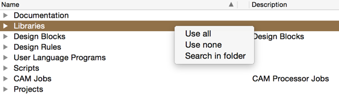
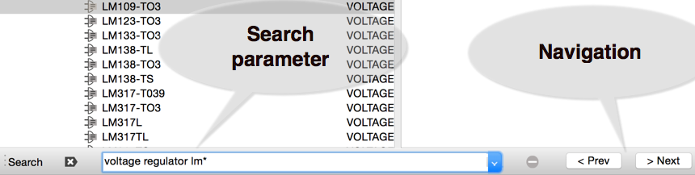

Open up the eagle control panel right click on the library folder as shown in figure 1, an option to search will be available select it and a search box will appear at the bottom as shown in figure 2. Type in your parameters such as " voltage regulator lm* ", use of wildcards is allowed and it will display the results and allow navigation. This is handy to see if the component exists in your library and to make sure you don't duplicate your efforts by creating a new one.

Figure 1 right click on folder

Figure 2 searching for a component " voltage regulator lm* "
If you do create a new library it is recommended that you edit the directories list to add in an external library and store it there so when an upgrade occurs you will not have to copy and paste into the new version of the software,
More information, libraries,scripts and instructions can be found on my github here.
Copyright Paul Cavanagh